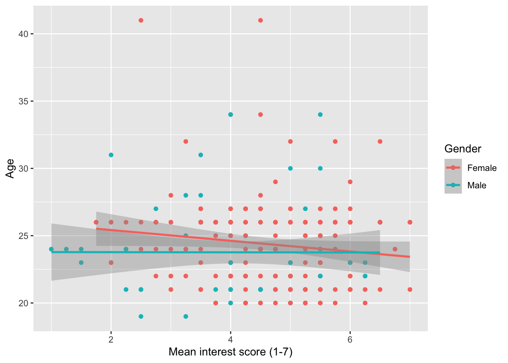
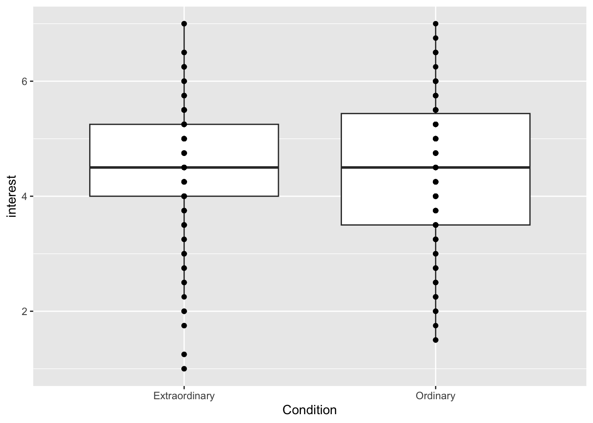
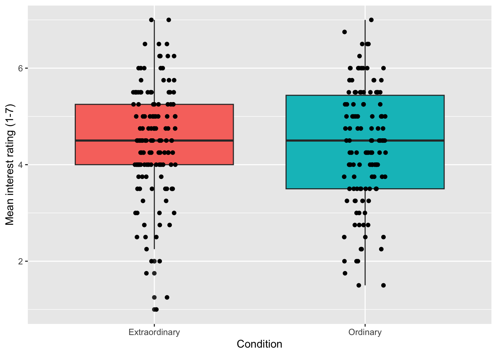
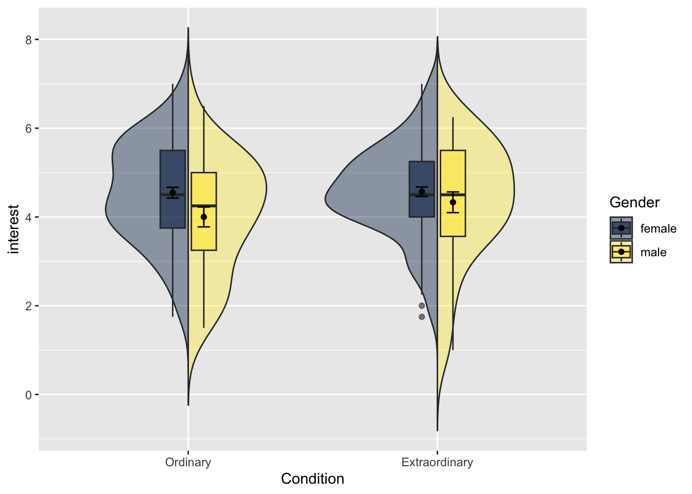
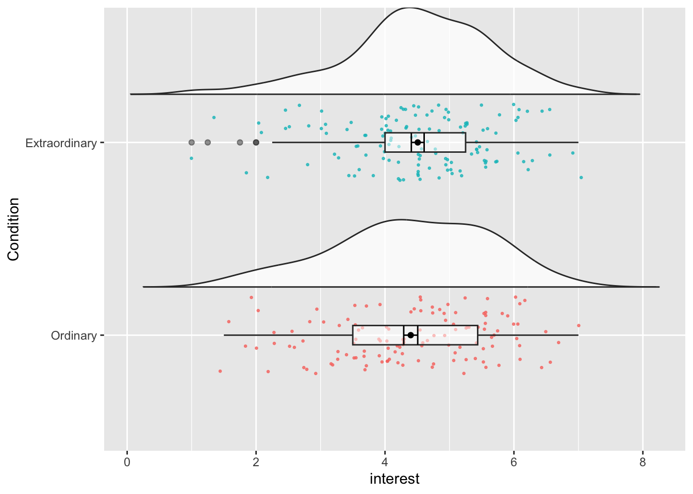

library(tidyverse)
zhang_data <- read_csv("Zhang et al. 2014 Study 3.csv")%>%
select(Gender, Age,Condition, T1_Predicted_Interest_Composite, T2_Actual_Interest_Composite)%>%
mutate(subject = row_number())%>%
pivot_longer(names_to = "time",values_to = "interest",
cols = T1_Predicted_Interest_Composite:T2_Actual_Interest_Composite)%>%
mutate(Condition = recode(Condition, "1" = "Ordinary", "2" = "Extraordinary"))%>%
mutate(time = recode(time, "T1_Predicted_Interest_Composite" = "time1_interest", "T2_Actual_Interest_Composite" = "time2_interest"),
Gender = recode(Gender, "1" = "male", "2" = "female")) %>%
filter(Gender %in% c("male", "female"))12 Visualisation
In this chapter we are going to focus on visualising data using ggplot2. You’ve already created a number of different plots including bar charts, scatterplots, histograms, qq-plots, and violin-boxplots, but now we will show you how to customise your plots further to give you a better idea of the range and flexibility of visualising data in R.
In this chapter, you won’t be asked to write any code yourself, we will give you all the example code. Instead, play with the arguments, change TRUE to FALSE and vice-versa, change the values and colours. This will help you learn what each bit does.
For all of the activities in this chapter we are going to use data from Experiment 3 of Zhang, T., Kim, T., Brooks, A. W., Gino, F., & Norton, M. I. (2014). A “present” for the future: The unexpected value of rediscovery. Psychological Science, 25, 1851-1860..
To help you understand the data we’re visualising, here is the abstract:
Although documenting everyday activities may seem trivial, four studies reveal that creating records of the present generates unexpected benefits by allowing future rediscoveries. In Study 1, we used a time-capsule paradigm to show that individuals underestimate the extent to which rediscovering experiences from the past will be curiosity provoking and interesting in the future. In Studies 2 and 3, we found that people are particularly likely to underestimate the pleasure of rediscovering ordinary, mundane experiences, as opposed to extraordinary experiences. Finally, Study 4 demonstrates that underestimating the pleasure of rediscovery leads to time-inconsistent choices: Individuals forgo opportunities to document the present but then prefer rediscovering those moments in the future to engaging in an alternative fun activity. Underestimating the value of rediscovery is linked to people’s erroneous faith in their memory of everyday events. By documenting the present, people provide themselves with the opportunity to rediscover mundane moments that may otherwise have been forgotten.
12.1 Activity 1: Set-up Visualisation
- Open R Studio and set the working directory to your chapter folder. Ensure the environment is clear.
- Open a new R Markdown document and save it in your working directory. Call the file “Visualisation”.
- Download Zhang et al. 2014 Study 3.csv and save it in your chapter folder. Make sure that you do not change the file name at all.
- If you’re on the server, avoid a number of issues by restarting the session - click
Session-Restart R - Delete the default R Markdown welcome text and insert a new code chunk that loads the package
tidyverseusing thelibrary()function. - Run the below code to load and wrangle the data into tidy data.
12.2 Activity 2: Histograms
First, let’s create histograms for interest to check the distribution. The first line of code creates the ggplot() object and specifies which dataset is being used, and what should be represented on the x and y-axis. Because this is a histogram, you only need to specify the variable on the x-axis because y is always frequency
12.2.1 Basic histogram
The code below will create a simple histogram with default appearance and no customisation. You wouldn’t use this graph in a paper, but if you just want to quickly check your distributions, for e.g., normality, this code might be enough.

12.2.2 Colour and fill
The next section of code will change the appearance. Plots in ggplot2 are highly customisable - R for Data Science has an excellent chapter on ggplot if you would like additional information.
Adding binwidth to geom_histogram() changes the bins of the histogram, i.e., how wide the bars are. The default is 30. Sometimes this may be appropriate but often you will want to change the binwidth. What value you give will depend upon your data.
colour() changes the colour of the line around the bars. fill() changes the fill of the bars.

12.2.3 Axis labels
The next section of code changes the labels on the graphs. Note that the labels are an additional layer (i.e., it comes after an +, rather than being an argument to geom_histogram()).
The function you use will depend on your data, the most common are scale_x/y_continuous and scale_x/y_discrete depending on whether you are displaying continuous or categorical data. Again, each axis is a separate layer.
These scale functions control all the information about the axis, from the label to the breaks, to the minimum and maximum values. For more information use the help documentation.
For our labelling purposes, there are two main arguments:
-
name()controls the main name of the axis -
labels()controls the name of the breaks
For our histogram we will just change the main axis labels.
12.2.4 Density curve
The following section adds a normal density curve to the histogram, which can be useful for checking the assumption of normality.
To add the line you must change the geom_histogram() to use density on the y-axis (the default is count) and add a stat_function() layer that draws the line.
ggplot(zhang_data, aes(interest))+
geom_histogram(binwidth = .3,
colour = "black",
fill = "grey",
aes(y = ..density..))+ # change y-axis to density
scale_x_continuous(name = "Mean interest score (1-7)") +
scale_y_continuous(name = "Count") +
stat_function(fun = dnorm, # this adds a normal density function curve
colour = "red", # this makes it red
args = list(mean = mean(zhang_data$interest, na.rm = TRUE),
sd = sd(zhang_data$interest, na.rm = TRUE)))
12.3 Activity 3: Scatterplots
12.3.1 Basic scatterplot
Now let’s make a scatterplot plotting Age and interest to see if there is any relationship between the two. We need to specify both the x and y-axis variables. The following code will produce a very simple scatterplot. Again, you wouldn’t use this graph in a paper, but for eye-balling your data it would suffice.
12.3.2 Axis labels
From this plot it doesn’t look like there is much of a relationship between age and interest ratings. We can now change the labels using the same scale functions as before.

12.3.3 Adding a regression line
It’s often useful to add a regression line or line of best fit to a scatterplot. The regression line is added with geom_smooth() and by default will also provide a 95% confidence interval. You can specify what type of line you want to draw, most often you will need method = lm, i.e., a linear model or a straight line. Look up the help documentation for geom_smooth() and see what other methods you can use.
12.3.4 Grouped scatterplots
We can use ggplot to show how the relationship might differ for different populations within our data. We do this by adding colour() to aes() and setting it as whatever variable we would like to distinguish between. In this case, we will see how the relationship between age and interest differs for the male and female participants. There are a few participants with missing gender so we will first filter them out.
zhang_data %>%
filter(Gender %in% c("male", "female")) %>%
ggplot(aes(x = interest,y = Age, colour = Gender))+
geom_point()+
scale_x_continuous(name = "Mean interest score (1-7)") +
scale_y_continuous(name = "Age")+
geom_smooth(method=lm)
And here’s that plot with the labels tidied up. Notice the use of scale_color_discrete() to adjust the labels for Gender.
When you change the labels, R will simply overwrite the names in the dataset. If you wanted to actually change the order of the categories (e.g., have male as the red line) you need to change the order of the factor. We will do this later, for now, just be sure that you’re changing the name of the right category (i.e., female comes first))
ggplot(zhang_data, aes(x = interest,y = Age, colour = Gender))+
geom_point()+
scale_x_continuous(name = "Mean interest score (1-7)") +
scale_y_continuous(name = "Age")+
geom_smooth(method=lm)+
scale_color_discrete(name = "Gender",
labels = c("Female", "Male"))
12.4 Activity 4: Boxplots
12.4.1 Basic boxplot
The following code will produce a simple boxplot for eye-balling your data.
12.4.2 Adding data points
If we add another layer geom_point() we can add our raw data points to our boxplots to make them more informative.

However, this plot suffers from over-plotting, that is, there are multiple data points on top of each other. We can change this by using geom_jitter(), which adds a layer of points that are jittered so that each one is visible.
height and width affect how much each point is jittered. Play around with the values to see how it affects the data points.

12.4.3 Adding colour
We may want to add colour to our graph (and for consistency, we’ll sort out the labels). We do this by adding the ‘fill’ argument to the ggplot aesthetic by specifying which variable the colour of the fill should be organised by.
ggplot(zhang_data, aes(x = Condition, y = interest, fill = Condition))+
geom_boxplot()+
geom_jitter(height = 0, width = .1)+
scale_x_discrete(name = "Condition") + # note the x-axis is discrete
scale_y_continuous(name = "Mean interest rating (1-7)")+
scale_fill_discrete(guide = FALSE) # this suppresses the legend because we don't need it
12.4.4 Boxplots for multiple factors
When you only have one IV, using the fill command to change the colour is a little redundant, as the colours don’t add any additional information. It makes more sense to use colour to represent an additional IV.
For this example, we’ll use Condition and time as IVs. fill() now specifies a second IV, rather than repeating the IV on the x-axis as in the previous plot.
With multiple IVs the command to overlay the raw data points changes as the data points also need dodged (try running the code with the previous geom_jitter function to see what happens)
12.4.5 Colour-blind friendly options
There is one more fill option that we can use. Rather than specifying scale_fill_discrete(), we can use scale_fill_viridis_d(). This function does exactly the same thing but it uses a colour-blind friendly palette (which also prints in black and white). There are 5 different options for colours and you can see them by changing option to A, B, C, D or E. Personally I like option E with alpha = .6 (to control transparency) but that’s not an official School position.

12.5 Activity 5: Reordering factors
R orders categorical variables alphabetically. For gender it didn’t really matter whether male or female was represented first and for time 1 and 2 it makes sense for them to be in this order but we may want to change the order of Condition (in my mind it makes more sense for Ordinary to come first, but that may just be me).
To do this we can use mutate() and fct_level() to change the factor levels to the order we want.
Now we can re-run the boxplot. That’s better.
12.6 Activity 6: Bar Charts
12.6.1 Basic bar chart
Bar charts should only be used for counts because they can distort your understanding of the data if you use them to represent means (see here for a great example.
First, we’ll do a bar chart for the count of male and females in our sample.

12.6.2 Bar charts with two factors
We can also use fill() to separate gender by Condition
12.7 Activity 7: Violin plots
12.7.1 Basic violin plot
Violin plots are so-called because with a normal distribution the shape would look something like a violin. They show density, i.e., the fatter the violin the more data points there are for that value.

12.7.2 Violin plots with raw data points
Like the boxplot, we can also add the raw data points to our violin plot, making sure to use jitter to avoid over-plotting.
ggplot(zhang_data, aes(x = Condition, y = interest))+
geom_violin()+
geom_jitter(height = 0, width = .1)
It’s important to remember that R is very literal. ggplot2 works on a system of layers. It will add new geoms on top of existing ones and it won’t stop to think whether this is a good idea. Try running the above code but put geom_jitter() first and then add geom_violin(). The order of your layers matters.
12.8 Activity 8: Violin-boxplots
One increasingly common graph is a violin + boxplot + summary plot that shows a huge amount of information about your data in a single plot.
- This code uses two calls to
stat_summary()that was introduced during the t-test chapter. The first draws apointto represent the mean, and the second draws anerrorbarthat represents standard error (mean_se).
-
guidesis a new function and can be used to adjust whether legends are displayed. This has the same effect as specifyingshow.legend = FALSEin bothgeom_violin()andgeom_boxplot()but it uses less code to do so.
-
fatten = NULLremoves the median line from the boxplots. This can be useful if you’re running a test where you’re comparing means as it makes it easier to see the point range. - You may get warning messages telling you that R has removed rows containing missing values, you do not need to worry about this.
ggplot(zhang_data, aes(x = Condition, y = interest, fill = Condition))+
geom_violin(alpha = .6, trim = FALSE)+
geom_boxplot(width = .2, alpha = .7, fatten = NULL)+
stat_summary(fun = "mean", geom = "point") +
stat_summary(fun.data = "mean_se", geom = "errorbar", width = .1) +
scale_fill_viridis_d(option = "E", label = c("Ordinary", "Extraordinary"))+
scale_y_continuous(name = "Mean interest rating (1-7)") +
guides(fill = FALSE)
12.9 Activity 9: Faceting
ggplot2 contains a facet function that produces different plots for each level of a grouping variable which can be very useful when you have more than two factors, for example, for a three-way ANOVA. The following code displays produces violin-boxplots for Condition ~ interest, but separately for male and female participants.
- This code adds an extra argument
position = position_dodge(.9)to align the layers with the violin plots. Try removing this argument from each layer to see what happens, and also try adjusting the value from.9to another number.
ggplot(zhang_data, aes(x = Condition, y = interest, fill = time))+
geom_violin(alpha = .6, trim = FALSE)+
geom_boxplot(width = .2,
alpha = .6,
fatten = NULL,
position = position_dodge(.9))+
stat_summary(fun = "mean", geom = "point",
position = position_dodge(.9)) +
stat_summary(fun.data = "mean_se", geom = "errorbar", width = .1,
position = position_dodge(.9))+
scale_fill_viridis_d(option = "E") +
facet_wrap(~Gender)
12.9.1 Facet labelling
Finally, changing the labels within the facets is a little more complicated - there’s no additional scale layer, instead, you adjust this inside facet_wrap() using labeller. This has always felt unintuitive to me and I have to look it up every single time so don’t worry if it is confusing - just remember where to look for the example.
ggplot(zhang_data, aes(x = Condition, y = interest, fill = time))+
geom_violin(alpha = .6, trim = FALSE)+
geom_boxplot(width = .2,
alpha = .6,
fatten = NULL,
position = position_dodge(.9))+
stat_summary(fun = "mean", geom = "point",
position = position_dodge(.9)) +
stat_summary(fun.data = "mean_se", geom = "errorbar", width = .1,
position = position_dodge(.9))+
scale_fill_viridis_d(option = "E") +
facet_wrap(~Gender, labeller = labeller(Gender = (c(female = "Female", male = "Male"))))
12.10 Activity 10: Split-violins and raincloud plots
Finally, we’re going to do something a bit snazzy. As well as the functions that are included in packages, anyone can also write custom functions and share the code. One such custom function allows us to create raincloud plots which are highly informative and very pretty. See here for more information about their creation and function (and to cite them if you use them in a publication or report).
In order to use this custom function code you will need to install the plyr package, although crucially, don’t load it like you normally would using library(). The custom function code will just use one very specific function, if you load the entire package you risk creating a function conflict.
12.10.1 Split-violin plots
Because the functions we need don’t exist in a package we can load, we need to create them. Copy and paste all the below code without changing anything. You do not need to understand this code. I certainly don’t. When you run this, you should see geom_split_violin appear in the Environment pane under Functions.
GeomSplitViolin <- ggproto(
"GeomSplitViolin",
GeomViolin,
draw_group = function(self, data, ..., draw_quantiles = NULL) {
data <- transform(data,
xminv = x - violinwidth * (x - xmin),
xmaxv = x + violinwidth * (xmax - x))
grp <- data[1,'group']
newdata <- plyr::arrange(
transform(data, x = if(grp%%2==1) xminv else xmaxv),
if(grp%%2==1) y else -y
)
newdata <- rbind(newdata[1, ], newdata, newdata[nrow(newdata), ], newdata[1, ])
newdata[c(1,nrow(newdata)-1,nrow(newdata)), 'x'] <- round(newdata[1, 'x'])
if (length(draw_quantiles) > 0 & !scales::zero_range(range(data$y))) {
stopifnot(all(draw_quantiles >= 0), all(draw_quantiles <= 1))
quantiles <- ggplot2:::create_quantile_segment_frame(data, draw_quantiles)
aesthetics <- data[rep(1, nrow(quantiles)), setdiff(names(data), c("x", "y")), drop = FALSE]
aesthetics$alpha <- rep(1, nrow(quantiles))
both <- cbind(quantiles, aesthetics)
quantile_grob <- GeomPath$draw_panel(both, ...)
ggplot2:::ggname("geom_split_violin",
grid::grobTree(GeomPolygon$draw_panel(newdata, ...), quantile_grob))
} else {
ggplot2:::ggname("geom_split_violin", GeomPolygon$draw_panel(newdata, ...))
}
}
)
geom_split_violin <- function (mapping = NULL,
data = NULL,
stat = "ydensity",
position = "identity", ...,
draw_quantiles = NULL,
trim = TRUE,
scale = "area",
na.rm = FALSE,
show.legend = NA,
inherit.aes = TRUE) {
layer(data = data,
mapping = mapping,
stat = stat,
geom = GeomSplitViolin,
position = position,
show.legend = show.legend,
inherit.aes = inherit.aes,
params = list(trim = trim,
scale = scale,
draw_quantiles = draw_quantiles,
na.rm = na.rm, ...)
)
}The split-violin is a version of the violin-boxplot that is good for visualising interactions. If you look at the faceted graph we made, there’s actually quite a lot of unnecessary space used up because we only need half of the violin to see the distribution - the other half is just repeating the same information.
ggplot(zhang_data, aes(x = Condition, y = interest, fill = Gender))+
geom_split_violin(trim = FALSE, alpha = .4)+
geom_boxplot(width = .2, alpha = .6,
position = position_dodge(.25))+
scale_fill_viridis_d(option = "E") +
stat_summary(fun = "mean", geom = "point",
position = position_dodge(width = 0.25)) +
stat_summary(fun.data = "mean_se", geom = "errorbar", width = .1,
position = position_dodge(width = 0.25))
12.10.2 Raincloud plots
The second custom function is geom_flat_violin. Copy and paste all of this code and again you should see it appear in your Environment pane.
"%||%" <- function(a, b) {
if (!is.null(a)) a else b
}
geom_flat_violin <- function(mapping = NULL, data = NULL, stat = "ydensity",
position = "dodge", trim = TRUE, scale = "area",
show.legend = NA, inherit.aes = TRUE, ...) {
layer(
data = data,
mapping = mapping,
stat = stat,
geom = GeomFlatViolin,
position = position,
show.legend = show.legend,
inherit.aes = inherit.aes,
params = list(
trim = trim,
scale = scale,
...
)
)
}
GeomFlatViolin <-
ggproto("Violinist", Geom,
setup_data = function(data, params) {
data$width <- data$width %||%
params$width %||% (resolution(data$x, FALSE) * 0.9)
# ymin, ymax, xmin, and xmax define the bounding rectangle for each group
data %>%
group_by(group) %>%
mutate(ymin = min(y),
ymax = max(y),
xmin = x,
xmax = x + width / 2)
},
draw_group = function(data, panel_scales, coord) {
# Find the points for the line to go all the way around
data <- transform(data, xminv = x,
xmaxv = x + violinwidth * (xmax - x))
# Make sure it's sorted properly to draw the outline
newdata <- rbind(plyr::arrange(transform(data, x = xminv), y),
plyr::arrange(transform(data, x = xmaxv), -y))
# Close the polygon: set first and last point the same
# Needed for coord_polar and such
newdata <- rbind(newdata, newdata[1,])
ggplot2:::ggname("geom_flat_violin", GeomPolygon$draw_panel(newdata, panel_scales, coord))
},
draw_key = draw_key_polygon,
default_aes = aes(weight = 1, colour = "grey20", fill = "white", size = 0.5,
alpha = NA, linetype = "solid"),
required_aes = c("x", "y")
)This plot is similar to the split-violin, but it adds in the raw data points and looks a bit like a raincloud as a result.
First, we will run the plot for just one variable, Condition. Again, try changing the arguments (adjust any numbers and change FALSE to TRUE) to see how you can control different aspects of the plot, in particular, try removing coord_flip() to see what happens.
ggplot(zhang_data, aes(x = Condition, y = interest))+
geom_flat_violin(position = position_nudge(x = .25, y = 0),
trim=FALSE, alpha = 0.75) +
geom_jitter(aes(color = Condition),
width = .2, size = .5, alpha = .75, show.legend = FALSE)+
geom_boxplot(width = .1, alpha = 0.5, fatten = NULL)+
stat_summary(fun = "mean", geom = "point",
position = position_dodge(width = 0.25)) +
stat_summary(fun.data = "mean_se", geom = "errorbar", width = .1,
position = position_dodge(width = 0.3)) +
coord_flip()
12.10.3 Raincloud plots with multiple factors
Now we can run the code for a 2 x 2 plot, adding in Gender to fill argument. This is quite a complicated plot, do not worry if you are struggling to understand the code but remember, you just need to understand which bits to change.
ggplot(zhang_data,
aes(x = Condition, y = interest, fill = Gender))+
geom_flat_violin(position = position_nudge(x = .25, y = 0),
trim=FALSE,
alpha = 0.6) +
geom_point(position = position_jitter(width = .05, height = 0.05),
size = .5,
alpha = .7,
show.legend = FALSE,
aes(colour = Gender))+
geom_boxplot(width = .3,
alpha = 0.5,
position = "dodge")+
stat_summary(fun = "mean", geom = "point",
position = position_dodge(width = 0.3)) +
stat_summary(fun.data = "mean_se", geom = "errorbar", width = .1,
position = position_dodge(width = 0.3)) +
scale_fill_viridis_d(option = "E") +
scale_colour_viridis_d(option = "E")
12.10.4 Finished!
And you’re done! As we’ve said throughout this chapter, you do not need to remember all of this code, you just need to remember what’s possible and where to find the examples that you can modify.